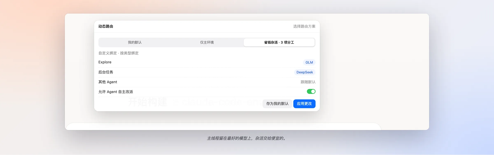
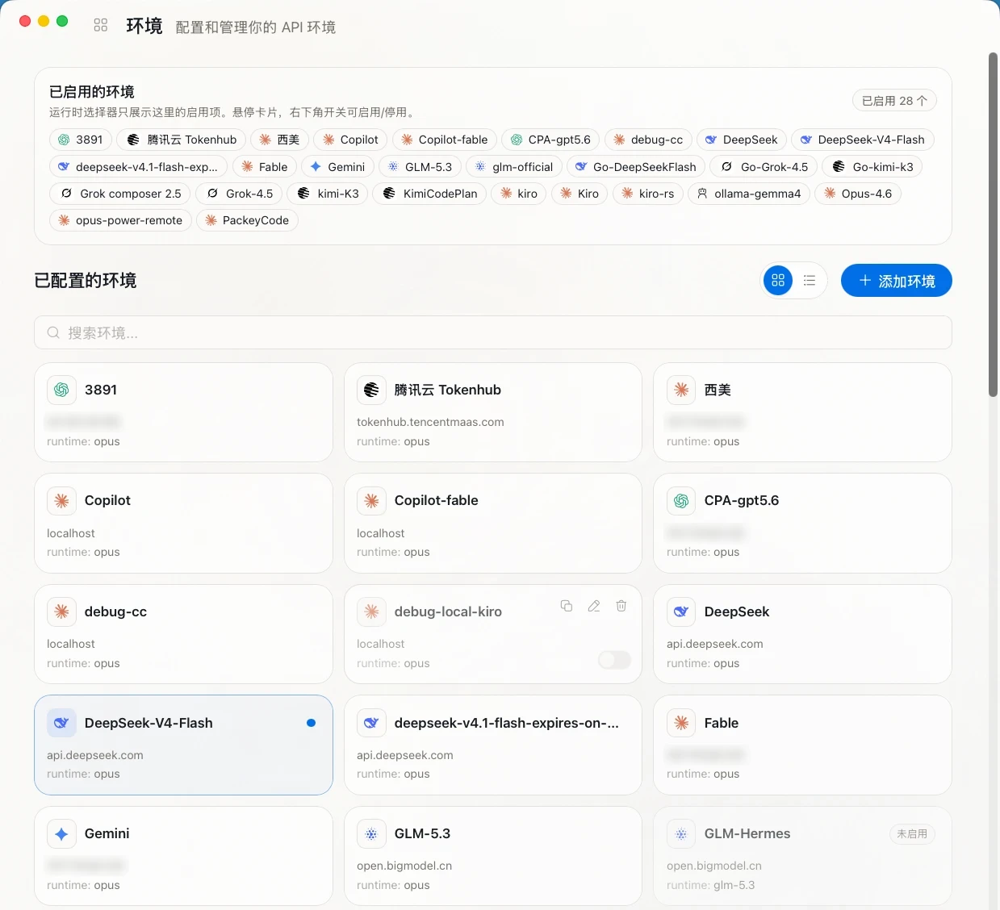
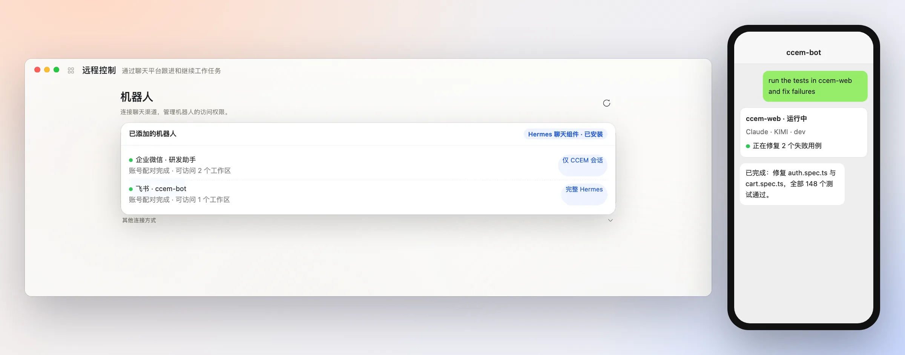

01 · 编排
Claude 规划
CCEM 派活
装上内置的 ccem agent skill，Claude 和 Codex 继续用最好的模型做规划，把常规部分作为后台会话派给更划算的环境，再读取事件、发送追问、取回结果。
ccem desktop create --env deepseek
01 · 编排
装上内置的 ccem agent skill，Claude 和 Codex 继续用最好的模型做规划，把常规部分作为后台会话派给更划算的环境，再读取事件、发送追问、取回结果。
ccem desktop create --env deepseek
02 · 路由
开启动态路由后，会话经由本地 127.0.0.1 的路由代理：Explore 发给 GLM，后台任务发给 DeepSeek，主线程跟随你选的环境。会话进行中也能改绑。
ccem desktop routes <id> --set Explore=glm
03 · 多模型
GLM、KIMI、DeepSeek、Qwen、MiniMax、MiMo、OpenRouter、Ollama 等。选预设、粘贴密钥，Opus / Sonnet / Haiku 三档自动映射。CLI 与桌面版共用一份配置。
ccem use kimi
04 · 机器人
把正在运行的会话交给已配对的机器人：Hermes 驱动的企业微信与飞书，以及 Telegram、微信、企业微信桥接。Hermes 决定哪些进展值得推送，你在聊天里回复，会话就接着跑。
ccem bot-bind
向下滚动
01 · 编排
你正在对话的应用继续当规划者。CCEM 给它四个动作，去指挥一队更便宜的 agent。
create在任意环境启动后台会话events增量读取它做了什么send追加指令，可用 --message-id 去重routes会话中途改绑路由后台会话 · 在 CCEM 中统一跟踪
02 · 路由
按 subagent 路由，每个会话单独开启。顶栏一眼看出是直连还是已路由。

把 Explore、后台任务或任意 subagent 类型绑定到各自的环境。
保存可复用的档案，或从「省钱杂活」「专长分工」模板生成。
看清每个环境处理了什么；也可以让 agent 在白名单内自行改路由。
03 · 多模型
不用再在八个终端标签里手动 export。密钥以 AES-256 加密，只留在你的电脑上。

04 · 机器人
出门买咖啡时测试挂了？在你本来就用的聊天应用里审批、追问、收结果。

扫码创建机器人，选择它能访问的工作区。
Forum Topics：一个话题对应一个项目、一个长期会话。
扫码登录、用户白名单，用 /approve、/deny 处理权限请求。
多机器人、管理员与用户分离，群聊 @ 即触发。
Apache 2.0 协议。原生 Tauri 桌面应用支持 macOS 与 Windows，CLI 哪里都能跑。